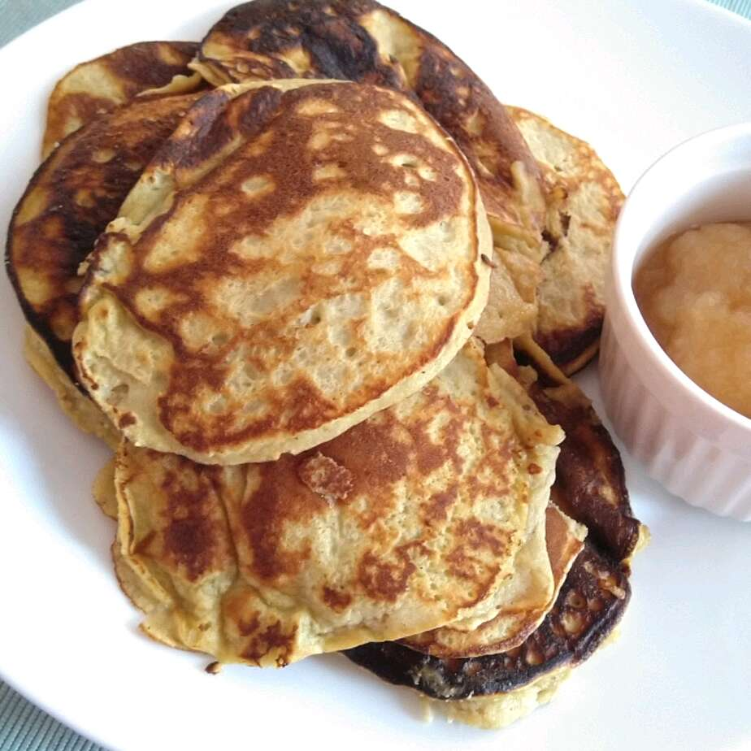

Pancakes

Description
We are gluten and wheat free in our family now. I tried these except I didn't have any almond flour. Instead I subbed Coconut flour. they turned out tasty. I find cooking with these types of flours makes the end product denser and it needs more cooking time. Something I need to get used to. Not that light fluffy texture one gets with a white wheat flour.
Ingredients
- 1 banana, mashed
- 3 eggs
- 1/4 cup almond flour
- 1 tablespoon almond butter
- 1 teaspoon vanilla extract
- 1/2 teaspoon ground cinnamon
- 1/8 teaspoon baking soda
- 1/8 teaspoon baking powder
- 1 teaspoon olive oil, or as needed
Directions
- Whisk banana, eggs, almond flour, almond butter, vanilla extract, cinnamon, baking soda, and baking powder together in a bowl until batter is smooth.
- Heat olive oil on a griddle or skillet over medium-high heat. Drop batter by large spoonfuls onto the griddle and cook until bubbles form and the edges are dry, 3 to 4 minutes. Flip and cook until browned on the other side, 2 to 3 minutes. Repeat with remaining batter.
Back to Homepage